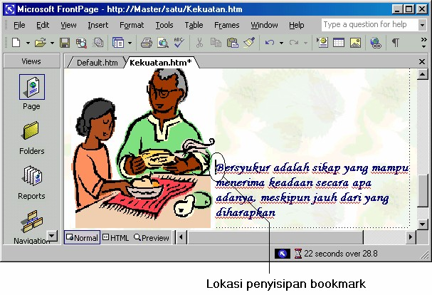
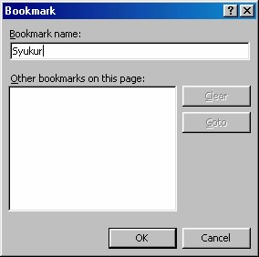
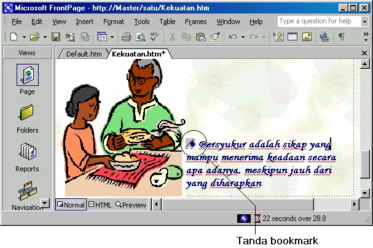
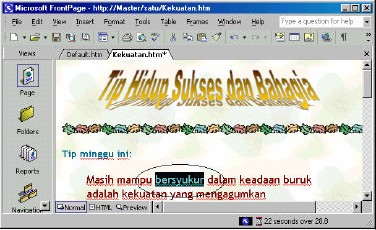
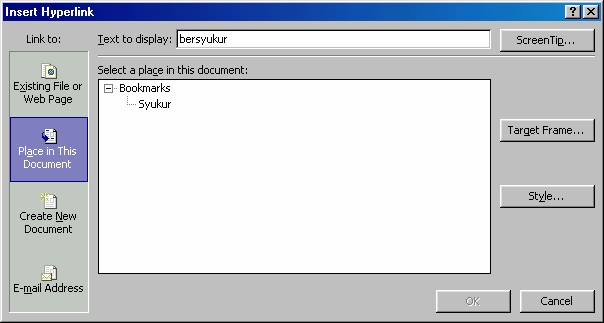
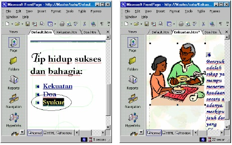
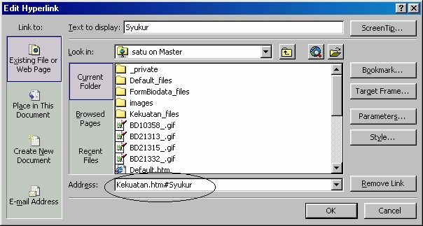

3 Link internal (bookmark)
Anda mungkin telah melihat halaman-halaman dengan link yang dapat membawa
Anda dari satu bagian halaman ke bagian lain yang masih di dalam halaman tersebut.
1.6 Bookmark satu halaman
Hal itu dwujudkan dengan bookmark (para pembuat web sering menyebutnya
target). Membuat sebuah link seperti ini prosesnya hanya dua, yaitu:
1. Pertama Anda harus membuat bookmark atau target.
2. Kemudian Anda harus membuat link ke target tersebut.
Untuk membuat sebuah bookmark, langkah yang diperlukan adalah:
1. Tempatkan cursor pada bagian awal baris yang ingin Anda sisipi dengan
bookmark.

Gambar 12.17 Penenmapat kursor pada awal baris tujuan
2. Kemudian aktifkan Insert _Bookmark. Kotak dialog Bookmark muncul (lihat
Gambar 12.18).

Gambar 12.18 Kotak dialog Bookmark
3. Ketikkan sebuah nama untuk bookmark itu pada kotak teks Bookmark Name,
misalnya Syukur.
4. Kemudian klik OK. Muncul icon bookmark.

Gambar 12.19 Tanda bookmark tampil
Dan Anda telah membuat sebuah bookmark, yaitu sebuah teks dengan garisbawah
biru putus-putus. Lihat Gambar 12.19 di atas.
Selain menggunakan kotak dialog Bookmark, Anda juga dapat menggunaka cara
seperti pada pengolah kata, yaitu:
1. Buka kotak dialog Bookmark
2. Klik sebuah masukan.
3. Klik tombol Goto untuk menuju ke baris tujuan.
Anda telah membuat bookmark. Sekarang bagaimana meng-hubungkannya? Anda
telah melihat bagaimana membuat link ke halaman lain, langkah pengkaitan
bookmark ini sangat mirip dengan hal tersebut, yaitu:
1. Pilihlah teks tempat link bookmark. Misalnya seperti Gambar 12.20.

Gambar 12.20 Teks “Bersyukur” terpilih
2. Klik tombol Insert Hyperlink atau pilih Insert _ Hyperlink. Kotak dialog Insert
Hyperlink terbuka.
3. Klik icon Place in this document. Daftar Bookmark terbuka, lalu pilihlah
Syukur (Gambar 12.24).

Gambar 12.21 Pemilihan Bookmark
4. Klik OK. Hasilnya, kata bersyukur akan berwarna terang dan mempunyai garis
bawah, mirip dengan tanda hyperlink.
Hanya itulah yang perlu dilakukan untuk membuat sebuah link dari satu bagian
halaman ke bagian lainnya. Selanjutnya Anda bisa mencoba link yang dibangun
dengan bookmark tersebut.
Hasilnya tampak seperti Gambar 12.22.
Gambar 12.22 Tampilan asal dan tampilan tujuan (bookmark)
1.7 Bookmark halaman lain
Bagaimana dengan membuat link dari satu halaman ke halaman lainnya, tetapi yang
dihubungkan adalah sebuah bookmark pada halaman tujuan, bukan ke dokumennya
itu sendiri? Itu mudah, walaupun ada yang hal-hal yang perlu diwaspadai:
Jika halaman tujuan dalam keadaan terbuka di FrontPage, Anda tinggal memilih
halaman yang Anda inginkan lalu memilih bookmark dari kotak daftar Bookmark.
Jika halaman itu dalam keadaan tertutup, FronPage tidak dapat menyediakan daftar
Bookmark dalam bidang Current FrontPage Web. Anda dapat mengetikkan nama
bookmark ke kotak teks Bookmark (jika Anda hafal nama halaman dan nama
bookmark-nya) atau membuka halaman tersebut lalu memilih icon halaman yang
Anda inginkan.
FrontPage juga tidak dapat menyediakan daftar bookmark jika Anda ingin
menyambung ke World Wide Web. Akan tetapi, dalam beberapa kasus Anda bisa
saja menemukan bahwa URL yang Anda peroleh dari browser telah berisi sebuah
bookmark. Jika ada sebuah nama file di dalam URL yang diikuti dengan tanda pagar
(#) lalu diikuti beberapa teks, maka itulah bookmark misalnya:
index.html#Kelompok Diskusi
Jika Anda mengetahui nama bookmark yang ingin Anda gunakan, Anda dapat
menuliskan dengan susunan
namahalaman #namabookmark
Contohnya:
1. Bukalah halam yang akan dipasang link.
2. Klik ganda teks yang akan dipasang link bookmark, misalnya seperti
Gambar 12. 23 sebelah kiri.

Gambar 12.23 Halaman asal dan halaman tujuan dengan bookmark
(Kekuatan.htm#Syukur)
3. Klik tombol Isert Hyperlink, munul kotak dialog Insert Hyperlink.
4. Pada kotak isian Address tuliskan nama halaman lalu diikuti tanda # dan
nama bookmark, dalam contoh ini Kekuatan.htm#Syukur. Lihat Gambar7.24
di bawah ini:

Gambar 12.24 Address bookmark
5. Klik OK. Kata syukur akan berubah menjadi teks hyperlink.
6. Selanjutnya Anda bisa mencoba hasilnya.
Copyright © Herlan Lesmana
Created with the Freeware Edition of HelpNDoc: Easily create Help documents